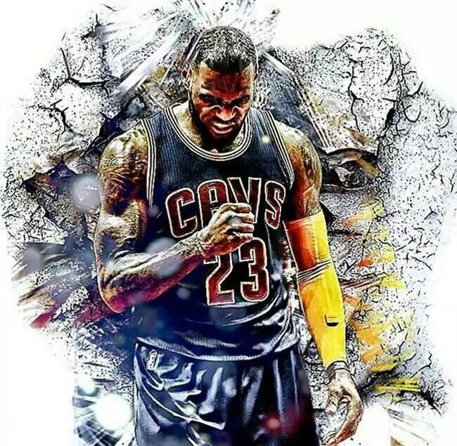

每一步都是历史！
看到老詹跪地长泣的那一刻，我才晃过神来，我就这么见证了一个梦幻的赛季，梦幻的系列赛。
这是我大三的最后几天，看到老詹夺冠的那一刻，我觉得我得写点什么，记录下来，因为这都是历史，我们是幸运的，可以作为历史的见证者；每个人都是幸运的，因为他们也可以见证那个时代的历史。
科比的梦幻谢幕。
科比是我们这个时代的乔丹，是篮球之神。从我第一天开始看球起，科比就一直在场上呼风唤雨，无所不能，他陪伴了我们整个青春时代，每次打球都会模仿唠嗑的后仰跳投，听到基友调侃的“美如画”。初中、高中、大学，唠嗑一直在那，恍惚间让人觉得他会一直在那，依旧可以每晚送出精彩的表现……可是，不管你演的再怎么逼真，终究无法骗过匆匆流逝的时光。直到唠嗑的谢幕战，直到唠嗑最后那记美如画的跳投，我依旧不能想象之后再也看不到球场上那个熟悉的身影。“太完美了！”大家在讨论组里不约而同发出这句话。没有英雄迟暮的凄凄、没有输给岁月的不甘、也没有即将离去的依恋，他依旧像20年前一样、依旧无所畏惧、依旧呼风唤雨、依旧“美如画”。太完美了，唠嗑！
老詹的梦幻系列赛。
说实话，在骑士1：3落后的时候，我并不觉得骑士能拿到总冠军，他们的对手勇士打出了一个如此梦幻的赛季——73胜，汤普森甚至放话“下一场将在甲骨文庆祝总冠军。”历史上从来没有球队在总决赛以1：3翻盘，“但是历史是人创造的”。我以前一直觉得这句话有点唯心，现在我得重新认识这句话了。历史会让你陷入悲观，甚至连克利夫兰以为70多岁的老球迷都不觉得骑士能赢，因为历史告诉他：“God hate Cleveland.”但他忘记了老詹是“The Choosen one”，是天选之子，它可以让God改变想法，在今天“God love Cleveland!”我想我们很难想象老詹所经受的压力，对于他的家乡，赢了便是英雄，输了便是罪人。一个钢铁般的男人在结束后伏地痛哭，也许之前老詹确实亏欠了克利夫兰，但在今天，这里便没有的怨恨终于有了家乡的味道，克利夫兰，以后请温柔地对待老詹。老詹，谢谢你。
